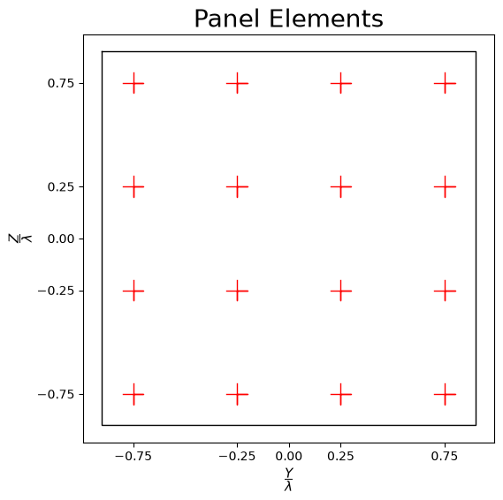
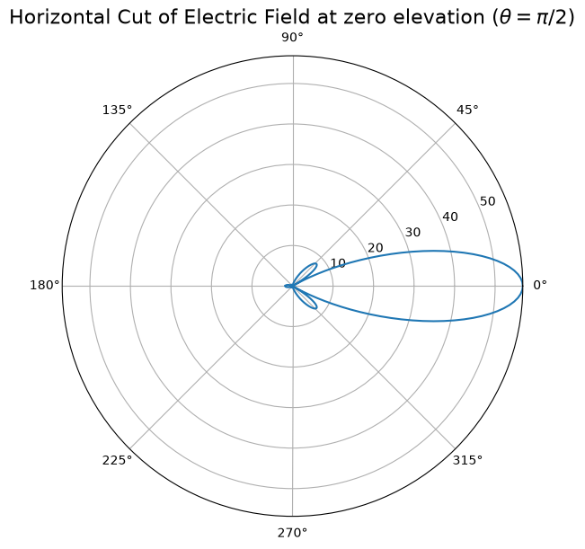
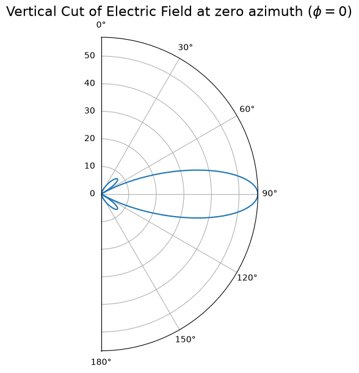

Comparing Antenna Panel Calculations with MATLAB
Compare the results with the equivalent MATLAB code “MatlabFiles/AntennaPanel.mlx”. Here is the execution results of this code in MATLAB.
[1]:
import numpy as np
import scipy.io
import time
import neoradium as nr
# Note: See the "AntennaPanel.mlx" file in the "MatlabFiles" directory and compare with the
# following results.
[2]:
# We first create an antenna element template. The antenna panel class "AntennaPanel" uses this
# template to create the elements of the panel.
elementTemplate = nr.AntennaElement(beamWidth=[65,65], maxAttenuation=30)
# Now we can create the antenna panel using the antenna element template. Note that the spacing between the
# elements is 0.5𝜆 by default.
panel = nr.AntennaPanel([4,4], elements=elementTemplate, polarization="+")
# The "showElements" method draws the antenna panel showing all the elements.
panel.showElements(zeroTicks=True)

[3]:
# Depending on the input parameters the "drawRadiation" method can create different types of graphs. Here
# we draw the Field values of the antenna panel at the horizontal plane of zero elevation.
panel.drawRadiation(theta=90, viewAngles=(90,0), radiationType="Field", normalize=False)
radValues = panel.getField(theta=90)
# We can print a selected portion of the field values returned by this function and compare the results
# with MATLAB.
radValues.min(),radValues.max(),radValues[175:185]
[3]:
(np.float64(1.3461163449353218e-16),
np.float64(56.83750173730888),
array([53.76686552, 54.85766752, 55.71739482, 56.33761657, 56.71222024,
56.83750174, 56.71222024, 56.33761657, 55.71739482, 54.85766752]))

Expected (from MATLAB):
array([53.76686552, 54.85766752, 55.71739482, 56.33761657, 56.71222024,
56.83750174, 56.71222024, 56.33761657, 55.71739482, 54.85766752]))
[4]:
# Here the "drawRadiation" method is used to draw the Field values in the vertical plane at azimuth angle 0.
panel.drawRadiation(phi=0, radiationType="Field", normalize=False)
radValues = panel.getField(phi=0)
# Print a selected portion of the field values and compare the results with MATLAB.
radValues.min(),radValues.max(),radValues[130:140]
[4]:
(np.float64(2.584305117453359e-16),
np.float64(56.83750173730888),
array([7.77330424, 7.94472821, 8.03364825, 8.04789381, 7.99526854,
7.88346163, 7.71996913, 7.51202565, 7.26654655, 6.99008022]))

Expected (from MATLAB):
array([7.77330424, 7.94472821, 8.03364825, 8.04789381, 7.99526854,
7.88346163, 7.71996913, 7.51202565, 7.26654655, 6.99008022]))
[5]:
# Comparing the directivity calculations with MATLAB
directivity = panel.getDirectivity()
# Read the file created by MATLAB for "directivity" values
directivityMatlab = scipy.io.loadmat('MatlabFiles/PanelDirectivity.mat')['directivity']
directivityMatlab = directivityMatlab[:-1,:-1]
directivityMatlab = np.maximum(-120, directivityMatlab) # We clip the minimum to -120 db (linearly to 1e-12)
assert directivityMatlab.shape==directivity.shape
print("Shape of Directivity results:", directivity.shape)
print("Maximum difference between the results:", np.abs(directivity-directivityMatlab).max())
Shape of Directivity results: (180, 360)
Maximum difference between the results: 1.6200374375330284e-11
[6]:
# Comparing the field calculations with MATLAB
field = panel.getField()
# Read the file created by MATLAB for "field" values
fieldMatlab = scipy.io.loadmat('MatlabFiles/PanelField.mat')['field']
fieldMatlab = fieldMatlab[:-1,:-1]
assert fieldMatlab.shape==field.shape
print("Shape of Field values:", field.shape)
print("Maximum difference between the results:", np.abs(field-fieldMatlab).max())
Shape of Field values: (180, 360)
Maximum difference between the results: 4.263256414560601e-14
[7]:
# Comparing the power calculations with MATLAB
powerDb = panel.getPowerPatternDb()
# Read the file created by MATLAB for "powerDb" values
powerDbMatlab = scipy.io.loadmat('MatlabFiles/PanelPowerDb.mat')['powerDb']
powerDbMatlab = powerDbMatlab[:-1,:-1]
powerDbMatlab = np.maximum(-120, powerDbMatlab) # We clip the minimum to -120 db (linearly to 1e-12)
assert powerDbMatlab.shape==powerDb.shape
print("Shape of power values:", powerDb.shape)
print("Maximum difference between the results:", np.abs(powerDb-powerDbMatlab).max())
Shape of power values: (180, 360)
Maximum difference between the results: 1.6186163520615082e-11
[ ]: